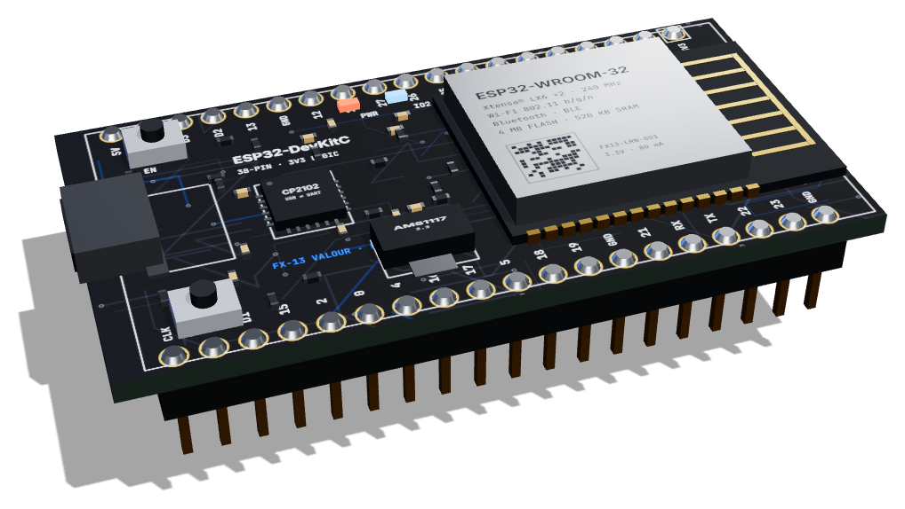

01 / 04
A whole computer on one chip.
A laptop spreads its brain, memory and connections over many chips on a big board. A microcontroller squeezes all of them into a single chip smaller than your fingernail.
Microcontrollers 101
An interactive guide to microcontrollers. Take an ESP32 apart, see how it thinks, then write code that runs on it — right here in your browser.
Meet the star of the show
A board about the size of a matchbox. It costs less than a pizza — and it can run robots, read sensors and talk over Wi-Fi.

Chapter 01
Every time you press a button on a microwave, a toy lights up, or a drone holds itself steady in the air, a tiny computer is making decisions. That computer is a microcontroller.
01 / 04
A laptop spreads its brain, memory and connections over many chips on a big board. A microcontroller squeezes all of them into a single chip smaller than your fingernail.
02 / 04
03 / 04
Your phone juggles hundreds of apps. A microcontroller usually runs a single program, starting the instant it gets power and repeating it until the power goes off — thousands of times every second.
04 / 04
| Laptop | ESP32 | |
|---|---|---|
| Starts up in | ~20 seconds | under 1 second |
| Power used | ~45 watts | ~0.5 watts |
| Asleep, uses | ~1 watt | 0.00003 watts |
| Costs about | $600+ | $5 |
Look around you
Tap a device to see what its microcontroller is doing.
Pick a device above.
Chapter 02
The ESP32 chip doesn't work alone. It sits on a small board with everything it needs: power, a USB port to talk to your computer, buttons, a light and rows of pins. Let's walk around it, part by part.
01 · The brain
The silver box is a metal shield. Hidden underneath is the ESP32 chip itself, plus its memory. The shield blocks radio noise so the chip and its Wi-Fi don't interfere with each other.
Think of it as: the brain, wearing a helmet.
Inside: an ESP32-D0WDQ6 chip with two Xtensa LX6 processor cores at up to 240 MHz, 520 KB of SRAM, a 4 MB SPI flash chip for your program, and a 40 MHz crystal that sets the timing. You'll lift the shield off in Chapter 3.
02 · Wireless
That gold zig-zag isn't decoration — it's the Wi-Fi and Bluetooth antenna, printed straight onto the board. Its exact length is tuned to catch 2.4 GHz radio waves.
Think of it as: the board's ears and mouth for radio.
It's a "meandered inverted-F" antenna. Folding the trace saves space while keeping its electrical length near a quarter wavelength (about 3 cm at 2.4 GHz). Keep metal and your fingers away from it for the best range.
03 · Power + data
One cable does two jobs: it powers the board with 5 volts, and it carries your program from the computer to the chip.
Think of it as: the lunchbox and the letterbox in one.
04 · Translator
Your computer speaks USB. The ESP32 speaks a simpler language called serial (UART). This little chip translates between them — so you can upload code and read messages from your program.
Think of it as: an interpreter at a meeting.
It also flips the EN and BOOT lines automatically during an upload, so you rarely need to press the buttons yourself. Some boards use a CH340 chip for the same job.
05 · Power
USB gives 5 V, but the ESP32 needs exactly 3.3 V — more would damage it. The regulator steps the voltage down and holds it steady.
Think of it as: a dam that lets out a calm, steady stream.
It's a linear regulator: it "burns off" the extra 1.7 V as a little heat. It can supply around 800 mA. Important: the ESP32's pins are 3.3 V only — never connect 5 V signals directly to them.
06 · Restart
Pressing EN switches the chip off for a moment and back on, so your program starts again from the very beginning.
Think of it as: the restart button on a game console.
07 · Upload mode
Hold BOOT while the board restarts and the ESP32 waits for new code instead of running the old program. Your programs can also read it as an ordinary button (it's connected to pin 0).
Think of it as: "Don't start yet — new instructions coming!"
08 · Lights
The red LED means the board has power. The blue one is connected to pin 2, so your code can switch it on and off — perfect for your very first program.
Try it: tap the blue LED's button below.
09 · Connections
These metal legs plug into a breadboard. Some give power (3V3, 5V, GND); most are GPIO pins — "general-purpose input/output" — that your program can read from or switch on and off.
Think of it as: the board's hands and nerves.
Pins 34–39 can only read (input only). Pins 0, 2, 5, 12 and 15 are "strapping pins" that set the chip's start-up mode, so use them with care. Some pins can also do analog input, touch sensing, PWM and serial communication.
Your turn
Drag the board to spin it around. Tap any dot to jump back to that part.
Chapter 03
Time to lift the lid. Under the metal shield live three things that make the whole board work: the brain, the memory that stores your program, and a crystal that keeps the beat.
The brain
Two processor cores, fast memory, the Wi-Fi radio and all the pin controls — on one piece of silicon 5 mm wide.
The notebook
Your program lives here. Like a USB stick, it remembers everything even when the power is off.
The heartbeat
A tiny slice of quartz that vibrates exactly 40 million times a second. Every action in the chip happens in step with this beat.
Zoom in further
Engineers divide the silicon into areas, each with its own job. This is a simplified map of the ESP32. Tap a block.
Tap a block
Each coloured outline is a different part of the chip.
Lab · The heartbeat
The crystal's beat drives a clock. On every tick the processor does one small step. Drag the slider from a slow tick up to the ESP32's real speed.
Speed1 Hz
Ticks in one blink of an eye0
One tick every second. You could count along.
Lab · How it thinks
Your program becomes a list of very simple instructions. The processor repeats three moves for each one, over and over. Step through a program that blinks an LED.
Press Step to fetch the first instruction.
PC0
R10
GPIO2LOW
Real ESP32 instructions are binary numbers (Xtensa machine code). The "PC" (program counter) is a register that holds the address of the next instruction. A JUMP simply changes the PC, which is how loops work. The ESP32 overlaps these stages in a pipeline, so it finishes about one instruction per tick.
Chapter 04
A microcontroller only sees electricity. Inside, everything becomes a voltage — and a voltage becomes a number your program can use. Here are the four tricks every pin can do.
Lab 1 · Digital output
An output pin is either HIGH (3.3 V) or LOW (0 V). Flip it and watch the current flow.
digitalWrite(4, LOW);
Pin0.0 V
Lab 2 · Digital input
An input pin reads the voltage on it. A "pull-up" keeps it HIGH until the button connects it to ground.
digitalRead(15) → HIGH
Pin3.3 V
Lab 3 · Analog input
Some pins can measure any voltage between 0 and 3.3 V. The ADC turns it into a number from 0 to 4095.
Voltage1.65 V
analogRead(34) → 2048
12 bits = 4,096 possible values
Lab 4 · PWM output
A digital pin can only be fully on or off. The trick: flick it on and off thousands of times a second. More "on" time = brighter.
analogWrite(4, 64);
On 25% of the time
Chapter 05
You write words. The chip only understands numbers. Follow one program on its journey from your keyboard to a blinking light.
In the Arduino IDE you write instructions in C++, a language people can read.
void setup() {
pinMode(2, OUTPUT);
}
void loop() {
digitalWrite(2, HIGH);
delay(500);
digitalWrite(2, LOW);
delay(500);
}A program called a compiler turns your words into machine code: the binary numbers the ESP32's processor actually runs.
The CP2102 chip on the board receives the bytes as a fast serial stream — about 115,000 bytes every second.
The program is written into the 4 MB flash chip. It stays there even with the power off — unplug it and plug it back in, and your program is still there.
The board resets, and your setup() function runs a single time. It's for getting ready: choosing which pins are inputs and which are outputs.
Then loop() starts, and when it reaches the end it simply starts again. Round and round, until the power goes off.
Chapter 06
This is a virtual ESP32 on a breadboard. Write real Arduino code on the left, press Run, and watch it come alive on the right.
Serial monitor · 115200 baud
pinMode(pin, OUTPUT | INPUT | INPUT_PULLUP)digitalWrite(pin, HIGH | LOW) · digitalRead(pin)analogRead(34) → 0–4095 · analogWrite(4, 0–255)delay(ms) · millis() · map() · constrain() · random()Serial.begin(115200) · Serial.print() · Serial.println()